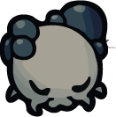
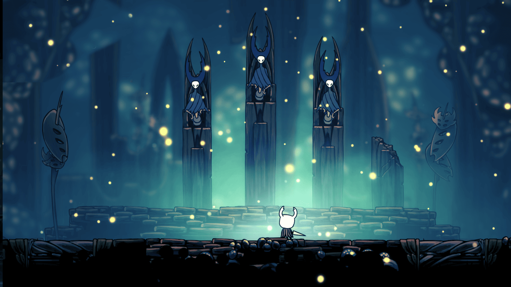
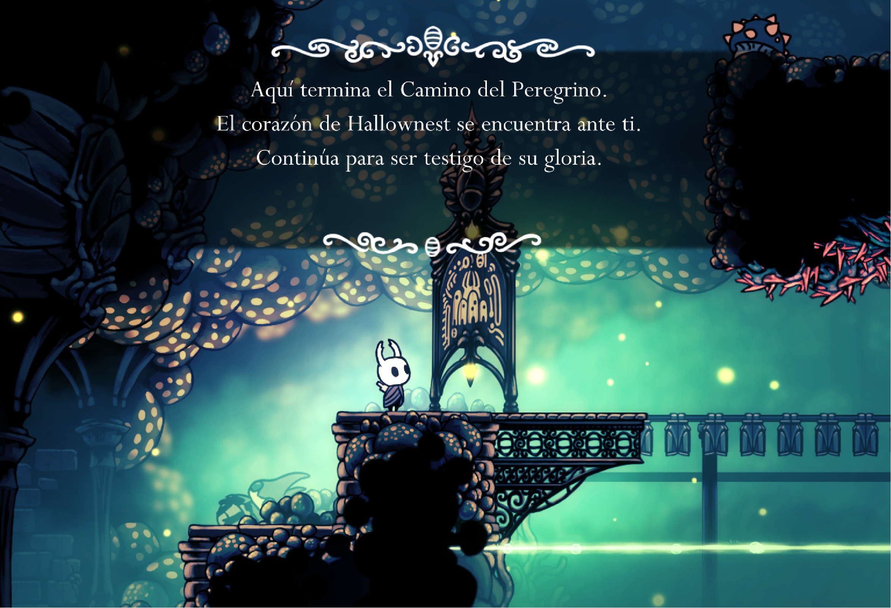
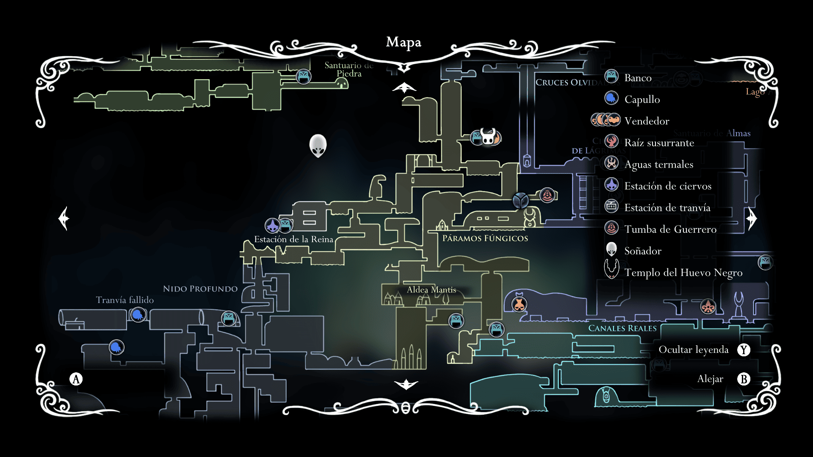
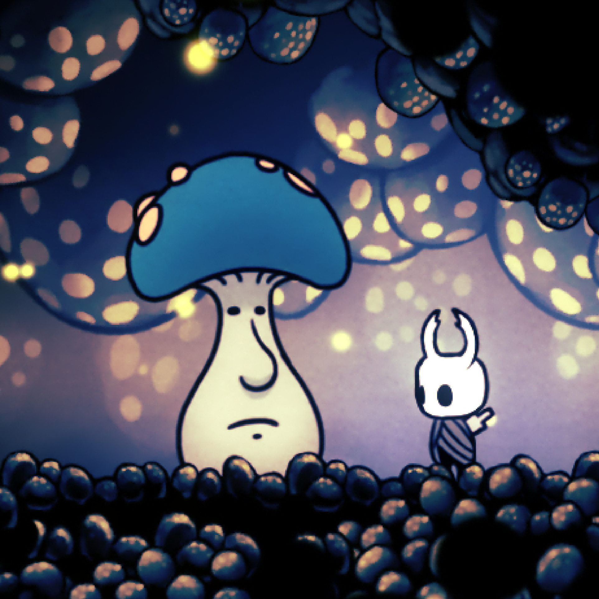
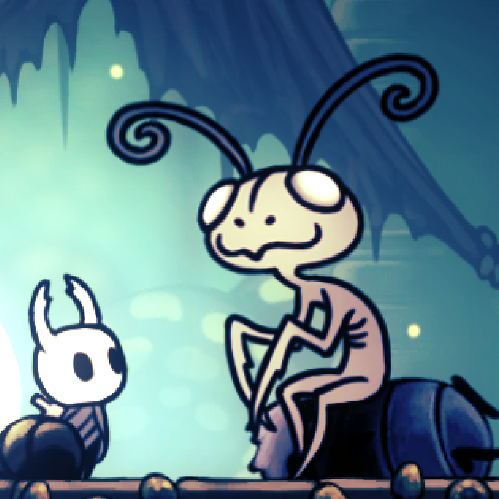
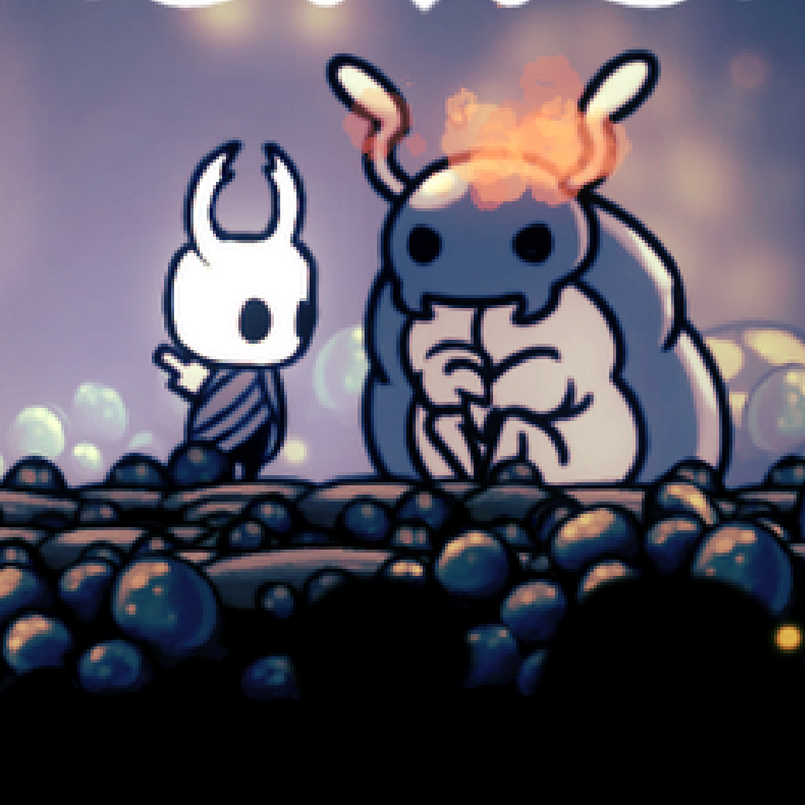
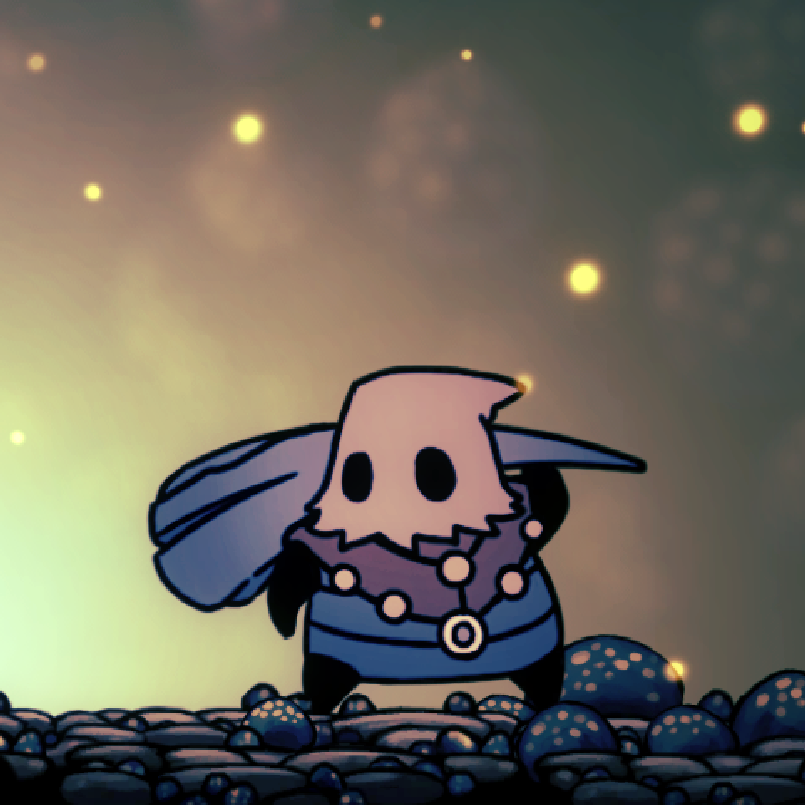
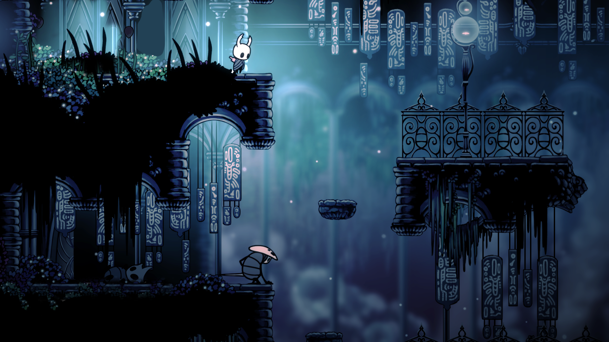

Fungal Wastes
Reproductor de música


La Ciudad de las Lágrimas es la antigua capital de Hallownest en Hollow Knight, ubicada en el centro del reino bajo una lluvia constante que filtra desde el Lago Azul. Su nombre original se perdió en la historia y hoy simboliza el duelo y la caída del reino ante la Infección de Destello
Fue el centro político y cultural de Hallownest, con estatuas del Rey Pálido, reliquias reales y estaciones de ciervos como la Estación del Rey y los Almacenes de la Ciudad
El agua proviene del Lago Azul, situado encima de la caverna subterránea, creando una atmósfera melancólica junto a la banda sonora


Nacen de sí mismos, su mente es una. Cerca de donde surge la ácida laguna.
Brillando en abismos oscuros y serpenteantes. Donde aúllan los vientos, sobre fósiles tambaleantes.
Aquí los monarcas vuelan en aires indolentes. En la tierra de Raíz, donde el caracol yace inerte.
Al Sendero del Wyrm, que nuevas tierras deja ver. Ahí termina su viaje, tras el Reino recorrer.

No intentes pasar a hurtadillas. Puedo olerte. Hmm... ¿Guardas mucho geo?
Dame geo y verás algo... bonito.

"¿¡Oh?! ¿Quién eres? Tu cara... eres tan... tan... Perdón, me perdí, no sé cómo acabé aquí.
¿Yo... viniste aquí a rescatarme, a Bretta?
¿La chica que todos simplemente... ignoran?
Perdón, cuando miro tu cara casi no puedo...
simplemente no me puedo creer que hayas bajado hasta aquí para rescatarme.
No pensé que nadie... Perdón... quiero decir, gracias. Quiero decir... mejor me voy.
De vuelta al pueblo, quiero decir. Mejor vuelvo a casa..."

¡Ajá! Los pasitos de una criatura diminuta. Parece que te gustan las aventuras, así que tenemos mucho en común.
¿Buscas lugares peligrosos? Vas por buen camino.
Un bicho cuellilargo me advirtió de una tribu en lo profundo. De clase guerrera, o eso dice, y tengo ganas de una buena pelea.
No me escondía, que lo sepas. Me echaba una siestecilla antes de continuar.
Seguro que me enfrentaré a bestias todavía más peligrosas pronto, así que tengo que conservar las fuerzas.
Sigue alerta, amante de las aventuras. Permanece con vida y volvamos a encontrarnos en el camino por recorrer.

A veces es difícil detectarlo entre el follaje. Cuando menos te lo esperas aparece a tu lado y carga todo contra ti.
Una estación de ciervos abandonada y en ruinas, al oeste de Páramos Fúngicos, con una estética propia. Solía ser una estación muy transitada antes de la infección. No contiene enemigos.

Una pequeña aldea en la que habitan la raza de las mantis. Las criaturas de esta zona son, en principio, hostiles, pero si se derrota a los Señores Mantis, se inclinarán ante el jugador realizando una reverencia. Esto no significa que no se puedan atacar para conseguir Geo, sino que ellos no atacarán hasta que el jugador lo haga.